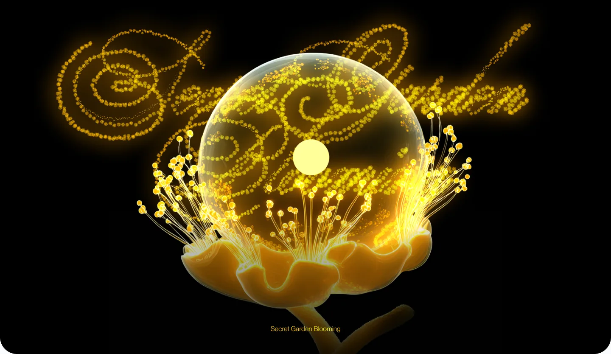
Secret Garden Blooming
Secret Garden Blooming
Живой сад, где можно разглядеть настоящие скрытые смыслы визуала
Services
Tools
Каждый постер раскрывает визуал с новой стороны: свет, рост, глубина и хрупкость.
Мы показываем это, чтобы уйти от поверхностного восприятия и обратить внимание на то, что делает визуал запоминающимся — внутреннюю структуру, слои и поведение.
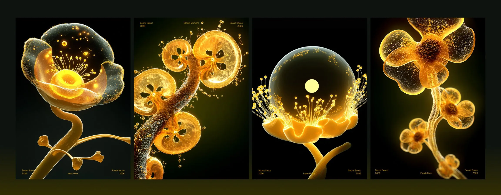
Specimen 01
— ✦ Inner Glow ✦ —Внутренний свет — это смысловой акцент.
Визуал становится сильным, когда внимание строится не на декоративной форме, а на чётком внутреннем центре.
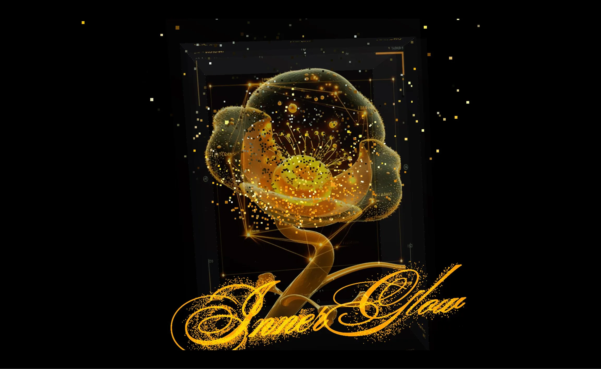
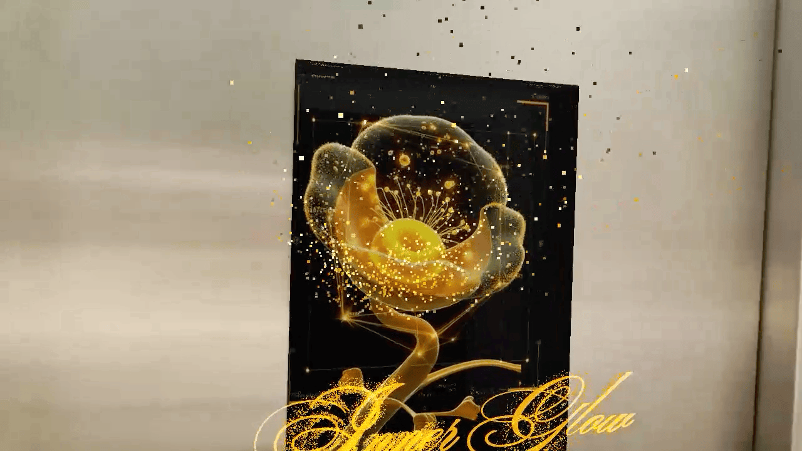
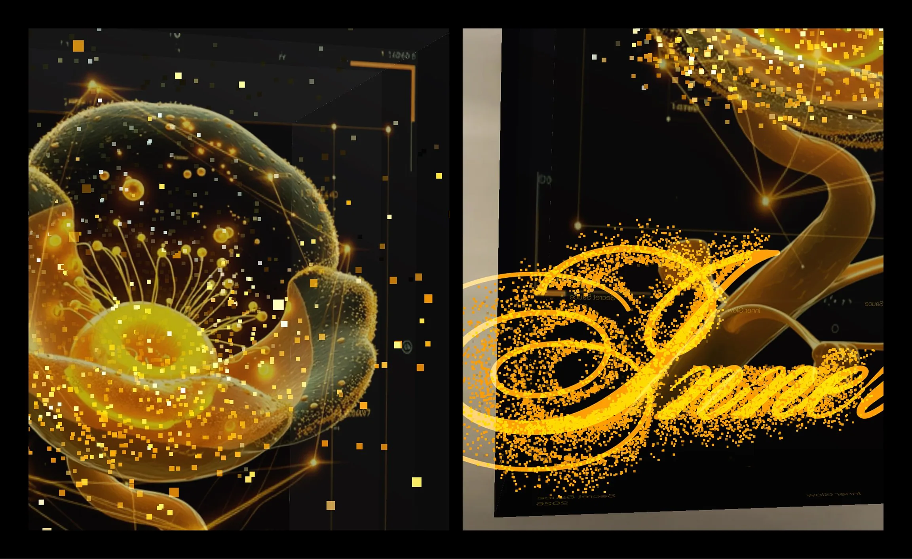
Specimen 02
— ✦ Bloom Moment ✦ —Момент раскрытия — это про идею, а не статичную форму.
Визуал работает лучше, когда он передаёт процесс или состояние, а не просто фиксирует объект.
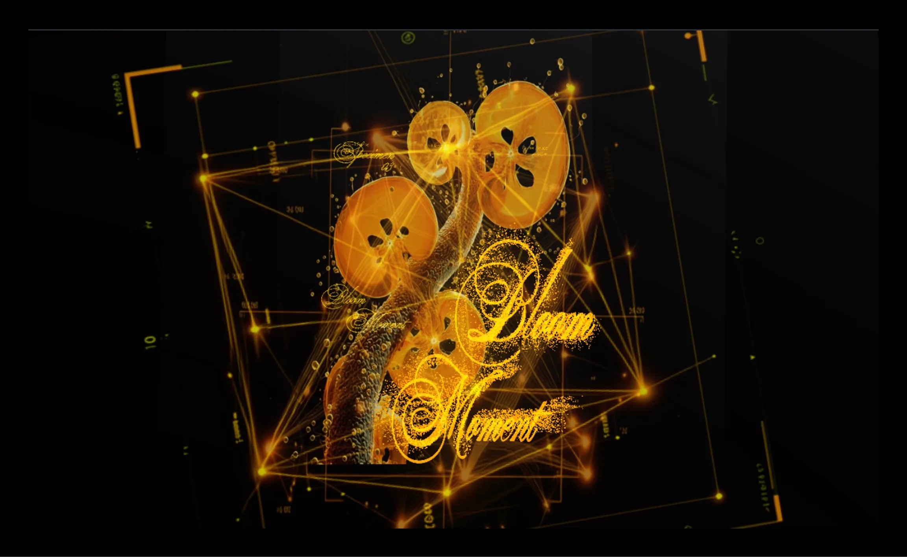
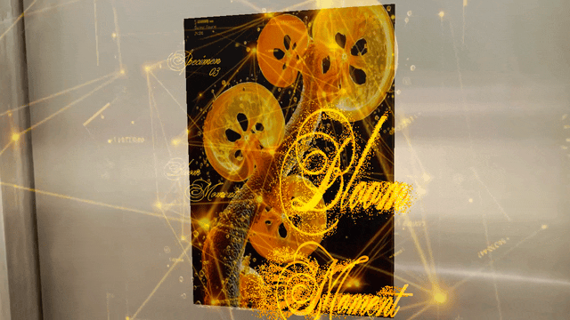
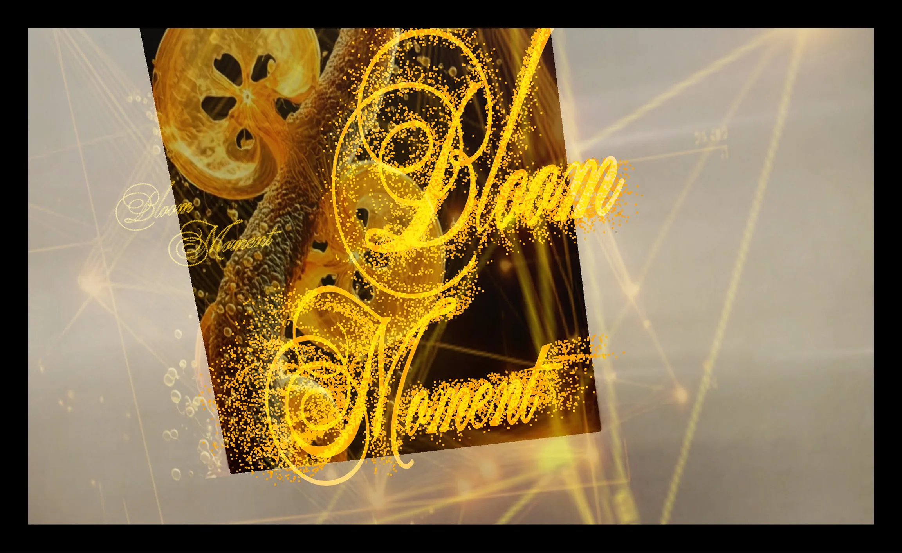
Specimen 03
— ✦ Layered Depth ✦ —Слои — это про глубину смысла.
Когда визуал состоит из нескольких уровней, он читается дольше и оставляет больше смысла, чем flat-графика.
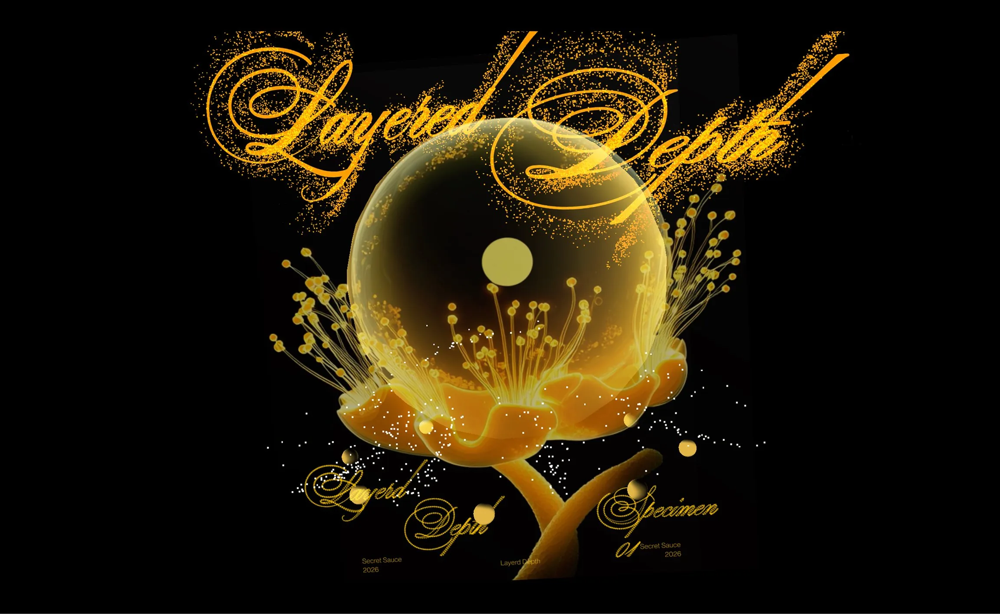
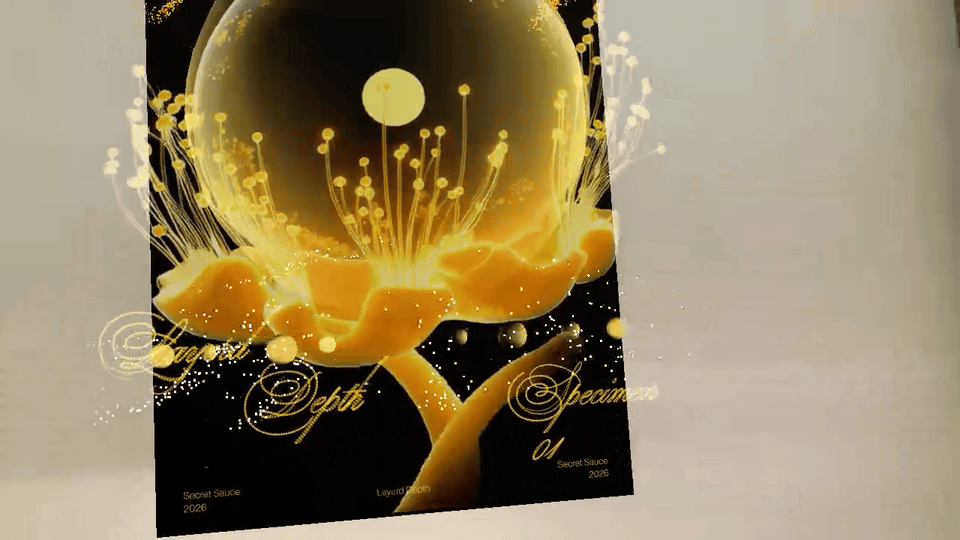
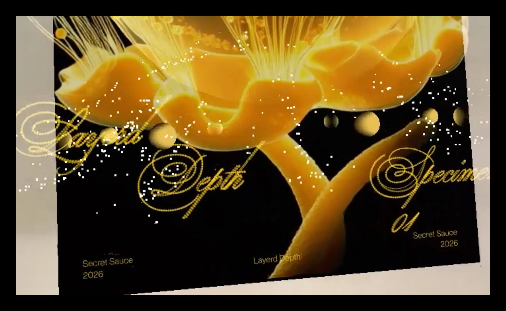
Specimen 04
— ✦ Fragile Form ✦ —Хрупкость — это про ощущение, а не идеальность.
Слишком «чистая» форма выглядит декоративной. Неидеальность делает визуал живым и вызывает отклик.
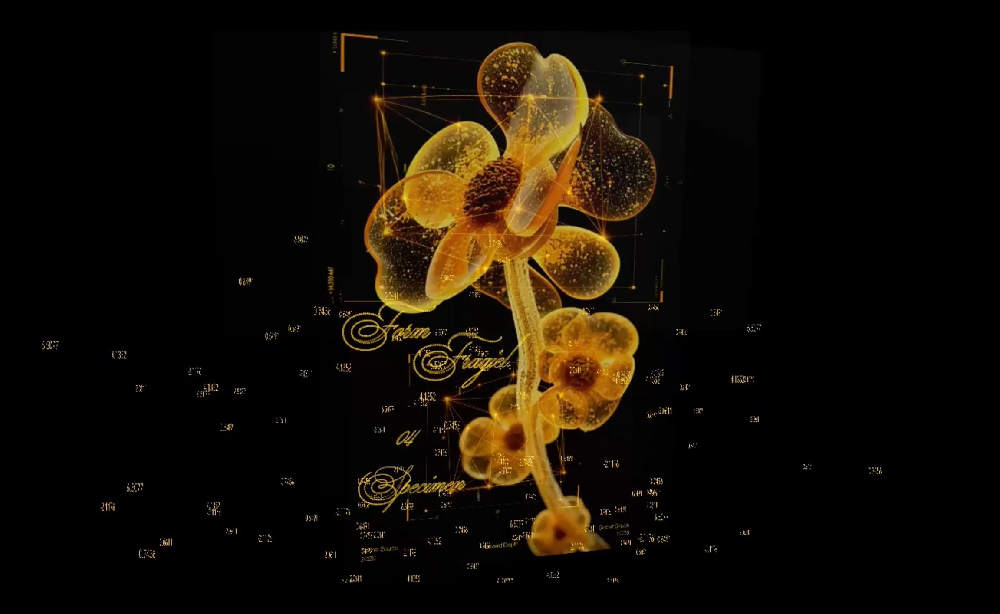
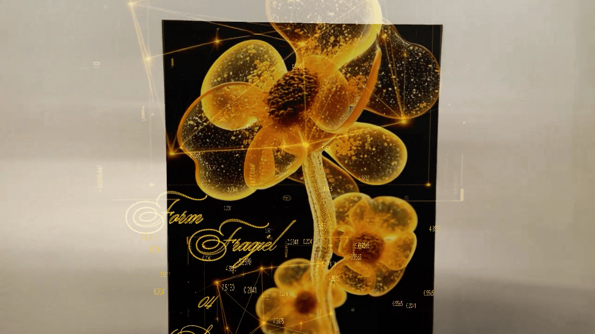
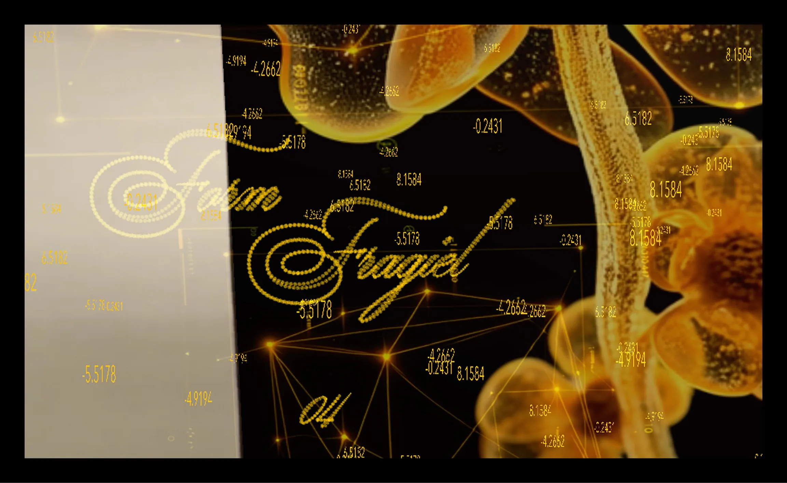